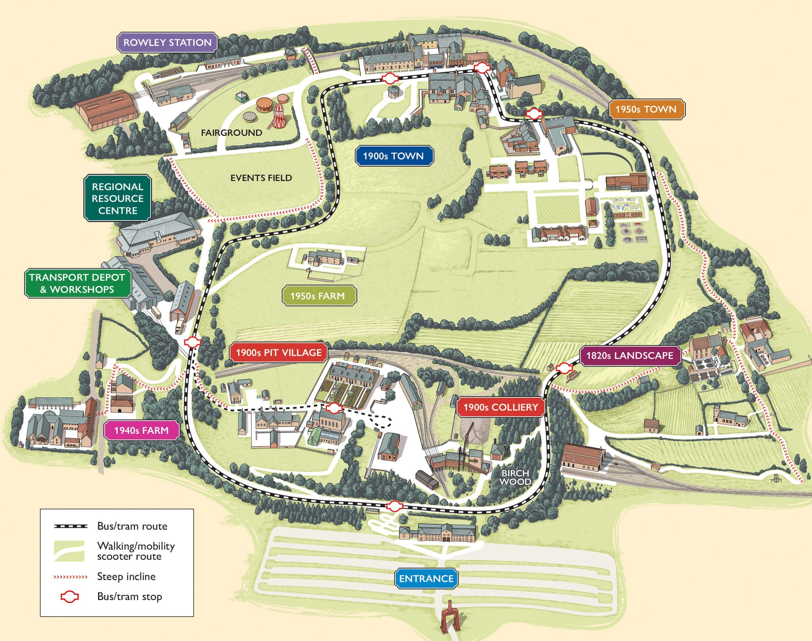

Museum Map

Practical Information
Opening Times: Beamish Museum is open daily, from 10am to 5pm, until the 23rd of October.
Disabled Access: Some of the outdoor areas and historical buildings may be difficult to access for wheelchair users. However, please ask our trained staff for assistance, and there is a wheelchair accessible vehicle available for use on request. Carers are admitted for free.
Dogs: Dogs are welcome in the outside areas of Beamish, as long as they are well behaved and remain on a lead. Please do not leave your dog tied to buildings or fences. Dogs are not allowed at evening events, with the exception of assistance dogs, who are also allowed indoors.
School Visits: School visits are welcome at Beamish, and entry can be booked at a reduced rate. Pupils enter for £7.75 each, with accompanying adults free under a ratio of 1:5. Please contact the museum before visiting to arrange your visit and see the latest information.